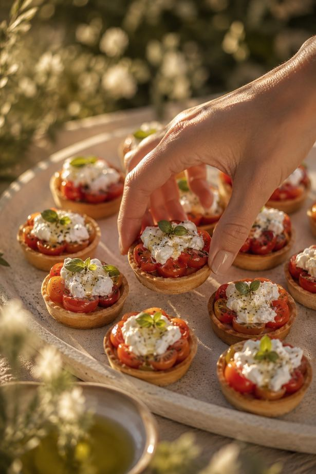
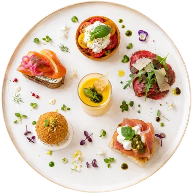
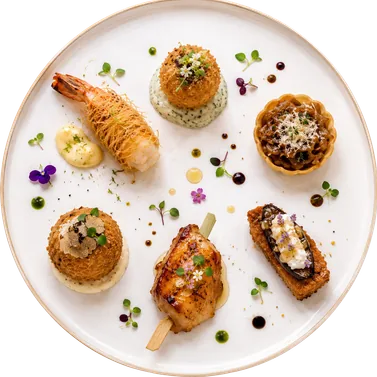

L'instant du
Jour J
Émotion, lumière et mouvement
Le jour du mariage possède son propre rythme.
Du cocktail au dîner, chaque instant est pensé comme une continuité naturelle : une cuisine élégante, vivante et sincère, au service de l'expérience. Cocktail solaire au coucher du soleil, atelier pensé comme une cuisine de maison d'été en Provence, dîner raffiné servi à l'assiette ou à partager.
Chaque proposition a été imaginée pour créer une réception fluide, chaleureuse et profondément mémorable. Une parenthèse provençale et inoubliable.

Jour J · 1 heure
Le cocktail
Les invités se retrouvent, circulent, découvrent les premières créations.

Pièces froides
- Tartelette fine tomate ancienne & stracciatella
- Mini pain nordique saumon fumé & citron confit
- Carpaccio de bœuf minute, parmesan & truffe d'été
- Gaspacho jaune en verrine
- Sphère chèvre frais de la Drôme et miel de Provence
- Mini focaccia burrata & jambon affiné

Pièces chaudes
- Mini cromesquis de parmesan
- Gambas croustillantes
- Tartelette comme une soupe à l'oignon
- Arancini truffe & pecorino
- Volaille marinée citron-thym
- Finger croustillant aubergine fumée & chèvre
Composition libre de 3 pièces · Pièces additionnelles disponibles sur demande
Ateliers minute · gestes de Chef · inspirations du Sud
Les scènes culinaires
- ILe comptoir provençal
Tout juste sortie du four, notre focaccia artisanale est découpée et garnie minute devant les invités : huile d'olive parfumée, légumes grillés, stracciatella crémeuse et herbes fraîches.
- IIL'art de la découpe du jambon affiné
Un véritable spectacle culinaire : sous les yeux des convives, notre maître trancheur découpe avec précision chaque morceau, révélant toute la finesse de ce produit d'exception.
- IIILa burrata des Pouilles
Dans un esprit méditerranéen chic, notre équipe dresse minute de généreuses burratas, tomates anciennes, huile d'olive parfumée et condiments provençaux.
- IVLa plancha de la mer
Sur une grande plancha fumante, poissons et crustacés sont snackés minute. Agrumes, herbes fraîches et huile d'olive : une animation iodée aux accents de la Riviera.
- VLe bar à aïoli provençal
Une version élégante du traditionnel aïoli : légumes croquants, poissons fondants et sauces maison, en hommage aux grandes traditions du Sud.
Une animation culinaire incluse · Animations additionnelles disponibles sur demande
Grandes tablées · art de recevoir contemporain
Le dîner
La nuit tombe doucement pendant que le dîner prend vie.

I. À partager
- Crudo de sériole aux herbes fraîches
- Artichauts grillés & pecorino affiné
- Tatin de tomates confites & ricotta fouettée
- Carpaccio de tomate, crème d'ail, pesto maison & burrata crémeuse
II. À l'assiette
- Ravioles ouvertes de chair de tourteau, pomme Granny Smith & herbes du jardin, émulsion safranée
- Œuf parfait, crème d'asperge, asperges vertes rôties & éclats de noisette torréfiée, lard d'Ardèche
III. Création signature
- Gambas black tiger laquées au gingembre & soja, condiment agrumes & crémeux de fenouil (+6 € / pers)
Une entrée incluse · Entrée additionnelle disponible sur demande
I. À partager cuisson live au feu de bois
- Carré d'agneau
- Picanha maturée tranchée minute
- Queue de lotte rôtie à la flamme
- Gambas géantes au citron confit
Accompagnements
- Polenta crémeuse au parmesan
- Aubergines fumées au feu de bois
- Carottes fanes glacées au miel
- Jus maison & sauces signature
II. À l'assiette
- Selle d'agneau rôtie & jus romarin, mousseline de céleri au café & légumes de saison
- Filet de poisson blanc selon arrivage cuit basse température, beurre blanc citronné, huile d'herbe, émulsion de maïs fumée
- Suprême de volaille fermière façon provençale, pressé de pommes de terre croustillant & jus corsé
III. Création signature
- Côte de bœuf maturée à partager, grenailles au romarin & légumes braisés au feu de bois, sauce chimichurri provençale (+15 € / pers)
Un plat inclus · 1 viande ou poisson et 2 accompagnements
I. À partager
- Pavlova exotique minute
- Paris-Brest revisité
- Tarte chocolat grand cru
- Choux vanille-pécan
- Fruits frais découpés
II. À l'assiette
- Citron de Menton & basilic frais
- Vacherin contemporain fruits rouges
- Dessert autour du chocolat noir Valrhona, cœur coulant caramel fleur de sel, crème vanille de Madagascar
III. Création signature
- Grande tarte à partager ou pièce montée (+15 € / pers)
Un dessert inclus · Dessert additionnel disponible sur demande


Collection Mariage 2027
Le jour J, tout compris
Cocktail, scène culinaire, dîner, vaisselle et personnel : découvrez nos deux formules.